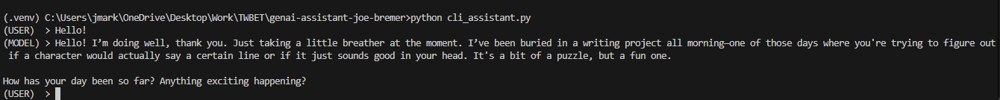
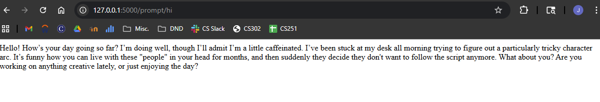

GenAI X Epistemology
For this unit, I created a simple GenAI assistant accesible both via CLI and a web-page.
CLI GenAI Assistant
I generally structured my CLI assistant similarly to modern chatbot sites, as a back-and-forth conversation.

Web-Based GenAI Assistant
The Web-Based assistant was structured similarly to the CLI, though with a somewhat less usable input method.

Epistemology
In class, we discussed Epistemology in regards to GenAI assistants. GenAI assistants certainly appear
to have knowledge of myriad topics, but does that mean that they actually have knowledge? Are GenAI
systems capable of belief, a prerequisite to knowledge as per its definition as justified belief?
A topic of class discussion that I found of particular interest was on the topic of Coherentism vs Foundationalism.
If knowledge is coherent, then is it true knowledge? Or must base principles exist? I was surprised by how many of my classmates
seemed to be staunchly foundationalist, and believed that GenAI had a coherent knowledge base. I believe
that there are no base principles by which knowledge can be reached, but that GenAI certainly
was only linguistically, and not conceptually, coherent.
Evans, R. (2025, December 17). Foundationalism and Coherentism: An Overview. Philosophos.org. https://www.philosophos.org/epistemological-theories-foundationalism-and-coherentism